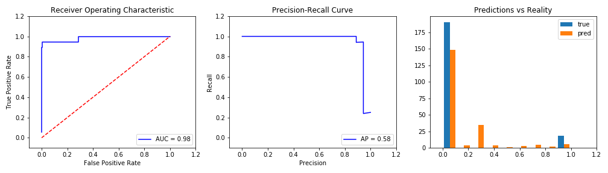

Up sampling Yeas. This will duplicate Yeas until Training is 50% Yeas. All Entries: 1039 Affirmitive examples: 66 (6%) Training: 1566 Affirmitive examples: 783.0 (50.0%) Testing: 208 Affirmitive examples: 18.0 (9.0%)

0s: 0.91 True Positives: 16 Accuracy: 0.9903846153846154 1s: 0.09 True Negatives: 190 AUC: 0.9839181286549707 False Positives: 0 F1 Score: 0.9411764705882353 False Negatives: 2 Recall (fract of actual yeas found): 0.8888888888888888 Precision (correctness of yeas predicted): 1.0
Trianed on 2019-04-23_95p-confidence_binary.csv. Embedding = "word2vec". Model = "VotingClassifier(estimators=[('logistic', LogisticRegression(C=1000000000.0, class_weight='balanced', dual=False, fit_intercept=False, intercept_scaling=1, max_iter=100, multi_class='ovr', n_jobs=1, penalty='l2', random_state=None, solver='liblinear', tol=0.0001, verbose=0, warm_start=F...subsample=1.0, verbose=0, warm_start=False)), ('GaussianNB', GaussianNB(priors=None))], flatten_transform=None, n_jobs=1, voting='soft', weights=[1, 1, 1, 1, 1])".